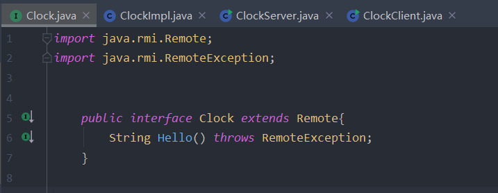

前言
本文是一个学习Java反序列化漏洞的一个前置文章，总结学习Java RMI的调用流程以及原理
Java RMI的定义
Java远程方法调用，即Java RMI (Java Remote Method Invocation)，是Java编程语言里，一种用于实现远程过程调用的应用程序编程接口。它使客户机上运行的程序可以直接调用远程服务器上的对象。远程方法调用特性使Java编程人员能够在网络环境中分布操作。
RMI（Remote Method Invocation）为远程方法调用，是允许运行在一个Java虚拟机的对象调用运行在另一个Java虚拟机上的对象的方法。这两个虚拟机可以是运行在相同计算机上的不同进程中，也可以是运行在网络上的不同计算机中。
在RMI中对象是通过序列化方式进行编码传输的。（基于序列化和反序列化就可能存在反序列化漏洞了）
RMI的基础是接口，RMI构架基于一个重要的原理：定义接口和定义接口的具体实现是分开的。
原理
RMI能让一个Java程序去调用网络中另一台计算机的Java对象的方法，那么调用的效果就像是在本机上调用一样。通俗的讲：A机器上面有一个class，通过远程调用，B机器调用这个class 中的方法。
RMI包含部分：
- 远程服务的接口定义
- 远程服务接口的具体实现
- 存根（Stub）和骨架（Skeleton）文件
- 一个运行远程服务的服务器
- 一个RMI命名服务，它允许客户端去发现这个远程服务
- 类文件的提供者（一个HTTP或者FTP服务器）
- 一个需要这个远程服务的客户端程序
Java RMI示例
远程方法调用
远程方法调用是分布式编程中的一个基本思想。而RMI（Remote Method Invocation）是专为Java环境设计的远程方法调用机制，远程服务器实现具体的Java方法并提供接口，客户端本地仅需根据接口类的定义，提供相应的参数即可调用远程方法。RMI依赖的通信协议为JRMP(Java Remote Message Protocol ，Java 远程消息交换协议)，该协议为Java定制，要求服务端与客户端都为Java编写。这个协议就像HTTP协议一样，规定了客户端和服务端通信要满足的规范。在RMI中对象是通过序列化方式进行编码传输的。远程对象
- 首先我们定义一个远程接口
Clock.java- 定义远程服务接口（interface）
- 远程接口必须继承Remote
- 远程方法必须抛出RemoteException
在Java中，只要一个类extends了java.rmi.Remote接口，即可成为存在于服务器端的远程对象， 供客户端访问并提供一定的服务。JavaDoc描述：Remote 接口用于标识其方法可以从非本地虚拟机上调用的接口。任何远程对象都必须直接或间接实现此接口。只有在“远程接口” 扩展 java.rmi.Remote 的接口）中指定的这些方法才可被远程调用

2. 接下来定义远程接口的实现ClockImpl.java
- 远程对象必须实现java.rmi.server.UniCastRemoteObject类，这样才能保证客户端访问获得远程对象时，
- 该远程对象将会把自身的一个拷贝以Socket的形式传输给客户端，此时客户端所获得的这个拷贝称为”stub”(存根)，
- 而服务器端本身已存在的远程对象则称之为”Skeleton”(骨架)。其实此时的存根是客户端的一个代理，用于与服务器端的通信，
- 而骨架也可认为是服务器端的一个代理，用于接收客户端的请求之后调用远程方法来响应客户端的请求。
客户端
- 根据主机和端口，获得服务注册器的引用
- 注册器根据服务名称查找对应的服务，并返回给客户端（Stub—-客户端代理）
- 客户对象通过Stub发送请求
- Stub将调用信息（变量、方法名称等）打包，通过网络将它发送给Skeleton（服务辅助对象）
- Skeleton将来自Stub的信息解包，找出被调用的方法（以及在哪个对象内），然后调用真正的服务对象上的真正方法
- 服务对象执行方法，获得返回结果，并将结果返回给Skeleton
- Skeleton将返回结果打包，通过网络返回给Stub（注意返回结果必须是可序列化的）
- Stub接受到数据后解包，返回给客户对象。
- 客户端所在的JVM启动后，可以多次调用服务端对象的方法。
stub和skeleton代理都是在服务端程序中由RMI系统动态生成,服务端程序只需要继承java.rmi.server.UnicastRemoteObject类即可
如何获取Stub
- 调用某个远程服务上的方法，向远程服务获取存根
JDK提供了一个RMI注册表（RMIRegistry），RMIRegistry也是一个远程对象，默认监听在1099端口上，可以使用代码启动RMIRegistry，也可以使用rmiregistry命令。
- 要注册远程对象，需要RMI URL和一个远程对象的引用。
LocateRegistry.getRegistry()会使用给定的主机和端口等信息本地创建一个Stub对象作为Registry远程对象的代理，从而启动整个远程调用逻辑。服务端应用程序可以向RMI注册表中注册远程对象，然后客户端向RMI注册表查询某个远程对象名称，来获取该远程对象的Stub。从客户端角度来看服务端，服务端开启了两个端口，一个是RMI注册端口默认为1099，另一个是远程对象通信端口，由JVM随机分配，1
2
3
4
5//创建Clock实例
Clock impl = new ClockImpl();
LocateRegistry.createRegistry(1099);
Registry registry = LocateRegistry.getRegistry();
registry.bind("Clock",stub);- 客户端代码
ClockClient.java
服务端
Clock是暴露在网络中的接口，ClockImpl是一个服务端远程对象，重写了一个Hello方法供远程调用。它没有继承UnicastRemoteObject类，我们可以在构造方法中调用UnicastRemoteObject.exportObject()例如：
1 | public ClockImpl() throws RemoteException{ |
也可以稍后在服务端代码中调用
- 服务端代码
ClockServer.java注册远程对象,向客户端提供远程对象服务远程对象是在远程服务上创建的，你无法确切地知道远程服务器上的对象的名称。但是，将远程对象注册到RMI Service之后，客户端就可以通过RMI Service请求到该远程服务对象的stub了，利用stub代理就可以访问远程服务对象了
- 服务端的流程是：
- 定义远程服务接口（interface）
- 定义远程服务接口的具体实现（implement）
- 将该远程服务注册到RMI命名服务上（指定主机及端口）（registry）
- 启动远程服务所在的jvm线程，此时服务端处于运行中。
运行实例
- 先运行服务端
- 运行客户端，调用成功
总结一下RMI 流程
- 服务端ClockImpl()继承Clock()创建远程对象
- 服务端CLock()注册远程对象
- 客户端访问服务器b并查找相应远程对象
- 服务器将stub(存根返回)客户端
- 客户端调用stub(存根)的方法
- stub(存根)作为代理与服务端骨架通信 //骨架作为服务端代理
- 骨架代理调用ClockImpl相应方法
- 骨架将结果返回给客户端的存根
- 存根返回给客户端

动态加载类
RMI核心特点之一就是动态类加载，如果当前JVM中没有某个类的定义，它可以从远程URL去下载这个类的class，动态加载的对象class文件可以使用Web服务的方式进行托管。这可以动态的扩展远程应用的功能，RMI注册表上可以动态的加载绑定多个RMI应用。对于客户端而言，服务端返回值也可能是一些子类的对象实例，而客户端并没有这些子类的class文件，如果需要客户端正确调用这些子类中被重写的方法，则同样需要有运行时动态加载额外类的能力。客户端使用了与RMI注册表相同的机制。RMI服务端将URL传递给客户端，客户端通过HTTP请求下载这些类。